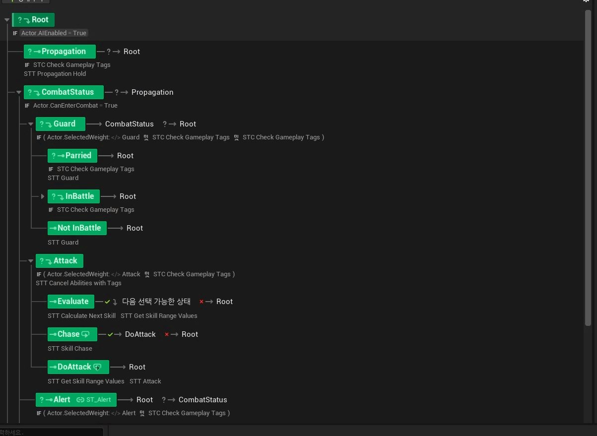
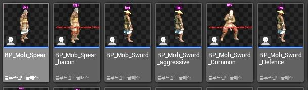
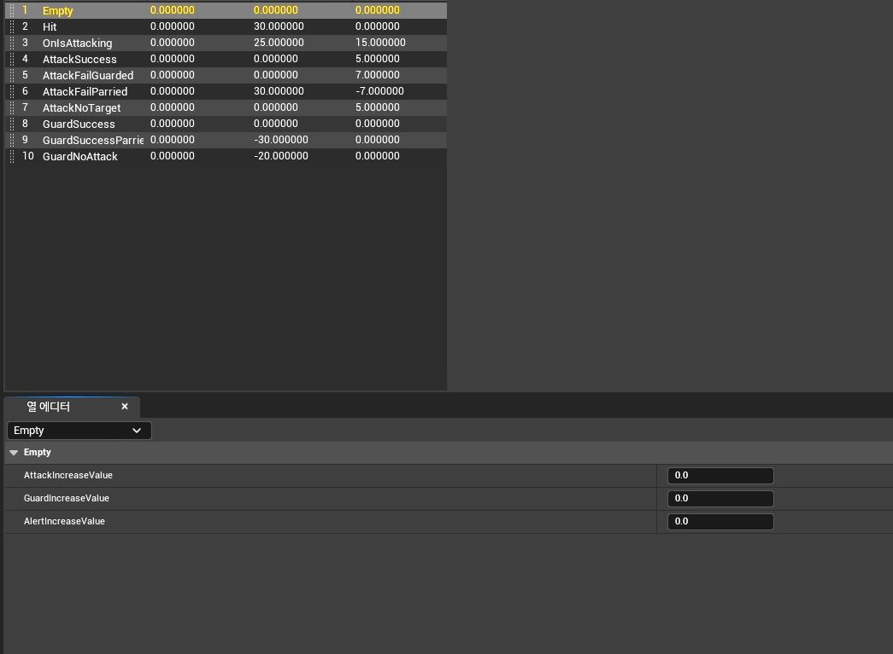
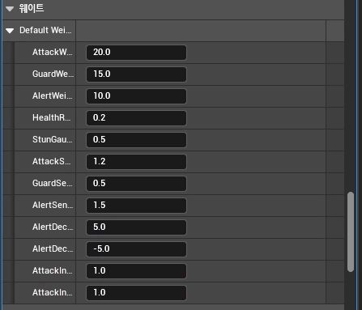
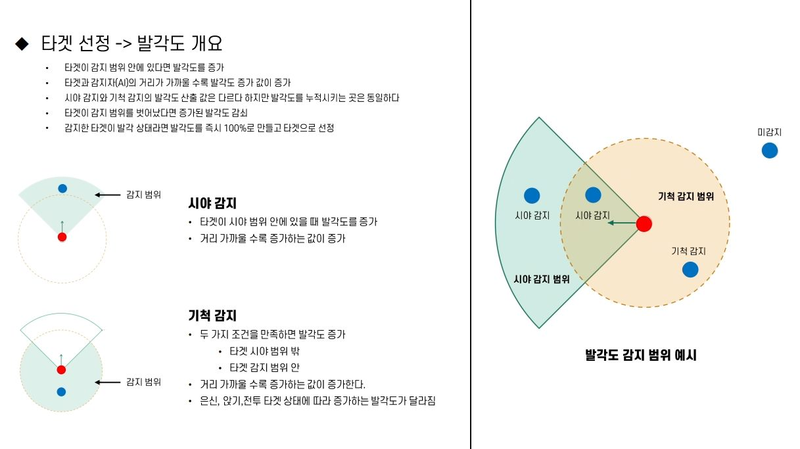
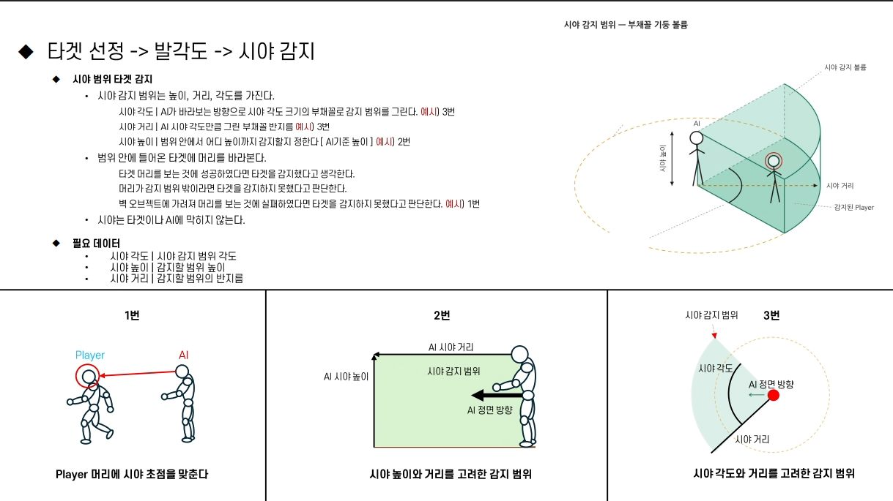
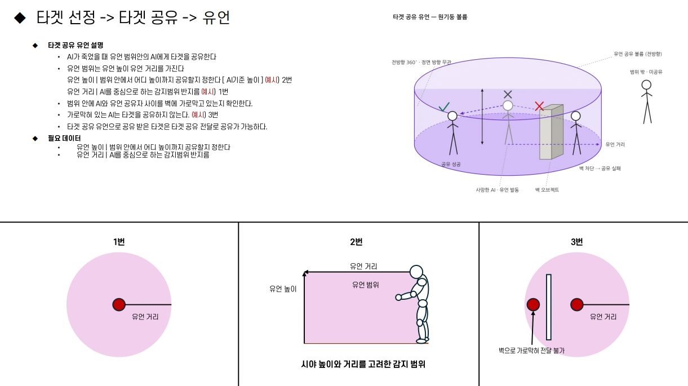
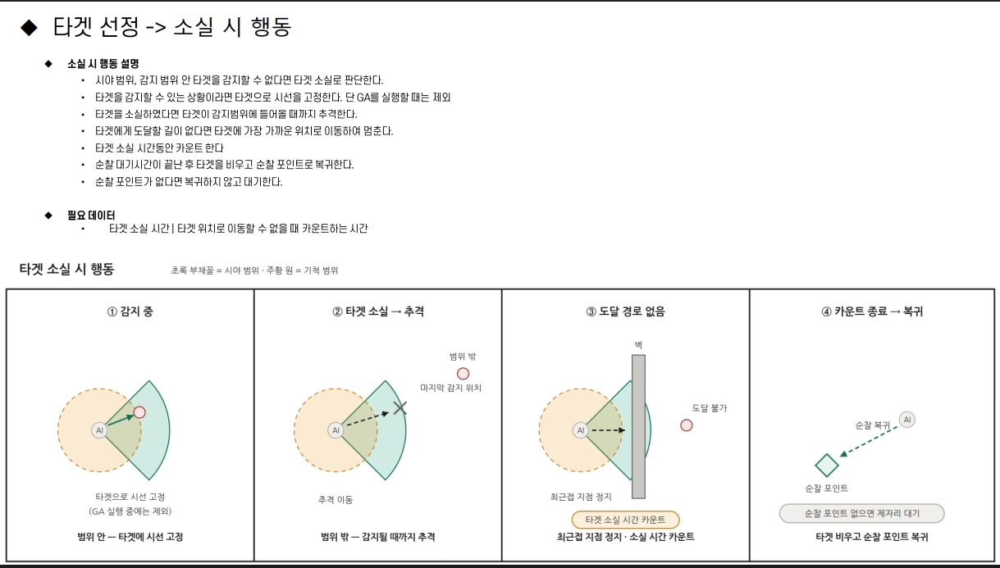

Work 01 / Common AI
공용 AI [적대 몬스터]
- 문제
- 전략적 판단에는 행동이 다른 적이 필요
- 해결
- State Tree · GAS · 데이터 테이블로 공용 AI 설계
RESULT
7종
공용 AI 하나로 만든 AI 유형
작업 방향성
전투는 익히기 쉽고, 게임 진행은 유저가 전략적으로 판단하는 잠입 액션 게임을 목표로 했습니다.
작업
행동 패턴이 다른 AI가 필요해, 하나의 구조로 여러 AI를 만드는 공용 AI를 State Tree, GAS, 데이터 테이블로 제작했습니다.
결과
공용 AI로 AI 유형 7종을 제작했고, 유형을 조합해 레벨에서 다양한 선택지를 제공했습니다.
역량상승
State Tree 이해도와 숙련도가 상승했고, 데이터 테이블을 설계 · 관리하는 역량을 쌓았습니다.
공용 AI 구조
세 요소를 조합해 하나의 구조로 여러 AI 유형을 만든다State Tree행동 흐름
GAS능력 · 상태
데이터 테이블유형별 수치
→
공용 AI하나의 구조
→
AI 유형 7종레벨에서 조합 → 다양한 선택지
WORK CAPTURES클릭하면 크게 볼 수 있습니다







